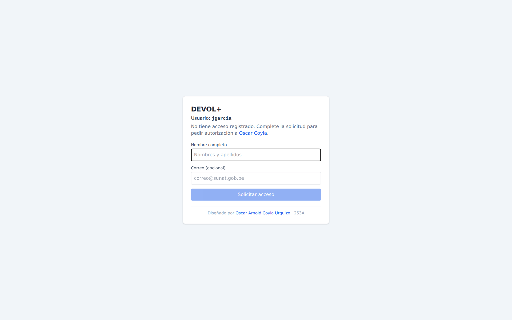
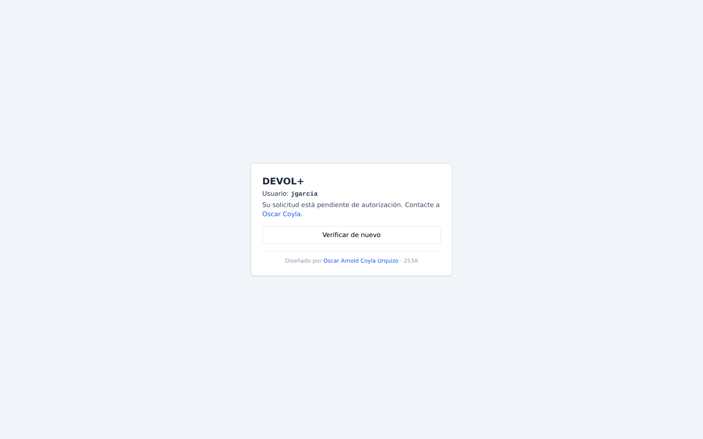
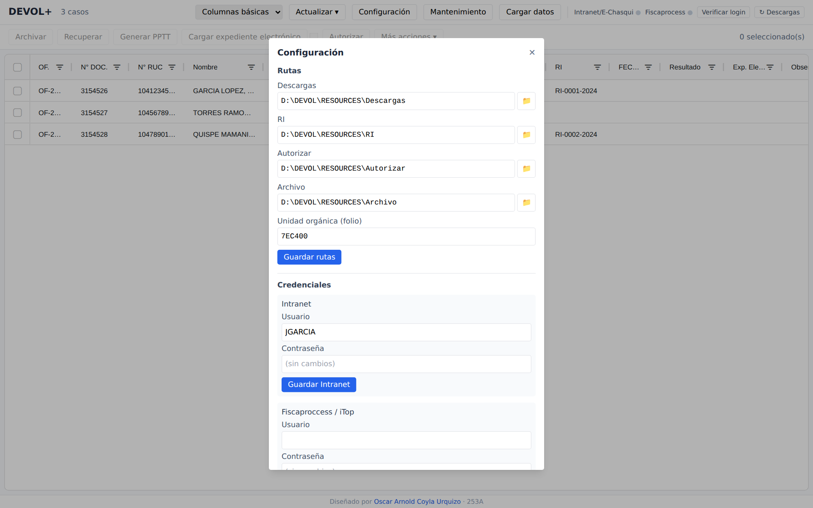
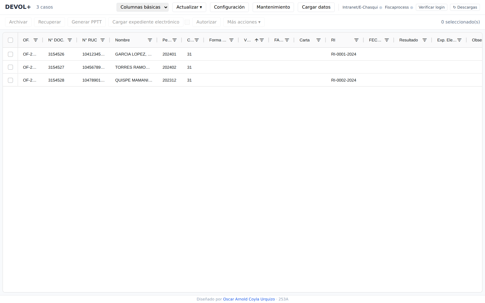
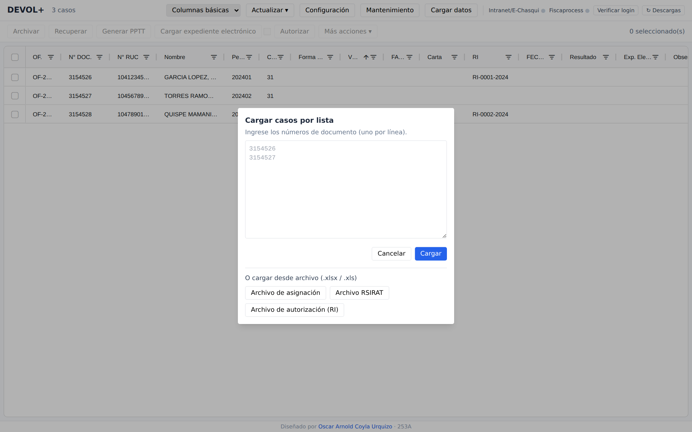
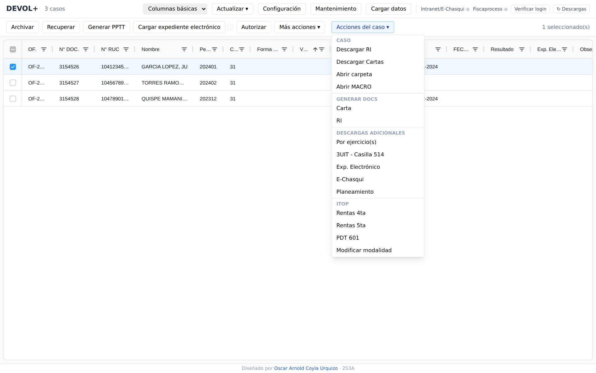
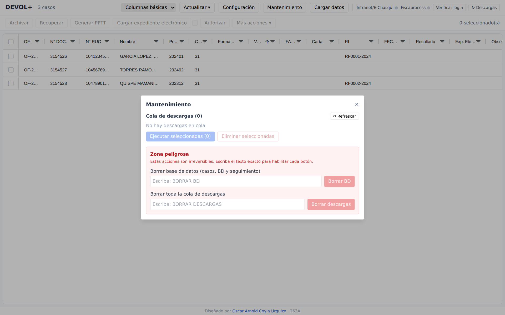

Qué es DEVOL+
DEVOL+ es una aplicación de escritorio que automatiza tareas del proceso de devoluciones: descarga de información, armado de expedientes (MACRO.xlsx), generación de documentos (RI y Cartas), carga de expedientes electrónicos, tickets Mesa de Ayuda y reportes.
Aunque por dentro es una app web, se ejecuta como un programa de
escritorio: al abrir DEVOL+.exe se levanta un servidor
local y una ventana propia (WebView2). No se abre ninguna consola ni
terminal — la aplicación corre en modo silencioso (console=false).
Distribución e instalación
La única forma válida de distribución es el ejecutable
DEVOL+.exe. No se instala con un asistente: se copia a la máquina
del usuario junto con sus carpetas de apoyo.
Estructura de despliegue
El ejecutable debe ubicarse junto a la carpeta RESOURCES y a sus carpetas de apoyo:
| Elemento | Descripción |
|---|---|
DEVOL+.exe | La aplicación. Incluye embebido el frontend y este manual. |
RESOURCES\ | Plantillas que usa la app: plantilla.xlsx (base para generar MACRO.xlsx), y las plantillas de RI y Cartas, entre otros insumos. |
| Carpetas de trabajo | Descargas, RI, Autorizar y Archivo — se definen en Configuración. |
RESOURCES o alguna de sus plantillas, las
funciones que generan MACRO.xlsx, RI o Cartas no podrán completarse.
Requisitos de la máquina
- Windows 10/11 con WebView2 Runtime (viene incluido en Windows actualizado).
- Conexión a la red interna (para descargas) e Internet.
- Aplicaciones de escritorio que la app orquesta (Excel, Outlook) según la tarea.
Resolución recomendada y firma automática
Varias funciones se ven mejor en pantallas amplias. Además, la firma automática por coordenadas (al cargar expedientes electrónicos) solo se habilita con una configuración de pantalla exacta:
| Parámetro | Valor requerido |
|---|---|
| Escala de Windows | 125% |
| Resolución física | 1920 × 1200 |
Con cualquier otra escala o resolución, la casilla de firma automática aparece deshabilitada y deberás firmar manualmente. Las capturas de este manual se tomaron precisamente en esa configuración.
Acceso y solicitud
DEVOL+ verifica automáticamente al usuario de Windows contra el sistema de accesos. Pueden darse tres situaciones al abrir la app:
1. Usuario sin acceso → solicitar
Si es la primera vez, verás un formulario. Completa tu nombre completo y, opcionalmente, tu correo, y pulsa Solicitar acceso. Tu usuario de red ya viene detectado.

2. Solicitud pendiente / rechazada / inactiva
Tras solicitar, tu acceso queda pendiente hasta que el autor lo apruebe. Mientras tanto verás un mensaje de estado; usa Verificar de nuevo una vez te confirmen la aprobación.

3. Usuario aprobado → entra directo
Si tu acceso está aprobado, la app abre la vista principal sin pasos adicionales.
Configuración inicial
Antes de operar, abre Configuración (botón en la barra superior) y define lo básico.

Rutas
- Descargas: carpeta donde se guardan los archivos descargados.
- RI: carpeta de trabajo de los RI generados.
- Autorizar: carpeta usada por el flujo de autorización.
- Archivo: carpeta destino al archivar casos.
- Unidad orgánica (folio): código de la unidad (p. ej.
7EC400) para el foliado.
Usa el botón de carpeta 📁 a la derecha de cada ruta para elegirla con el explorador. Pulsa Guardar rutas.
Credenciales
Guarda tus usuarios y contraseñas de Portal y Workflow / Mesa de Ayuda. Se usan para iniciar sesión en esos sistemas durante las descargas. La contraseña nunca se muestra; deja “(sin cambios)” si no quieres modificarla.
Feriados
Registra los días no laborables que la app debe considerar en el cálculo de plazos.
Vista principal
La pantalla central lista los casos cargados y concentra todas las acciones.

Barra superior
| Control | Función |
|---|---|
| Columnas básicas ▾ | Cambia la vista de la tabla: columnas básicas, toda la data, o la tabla de archivo. |
| Actualizar ▾ | Sincroniza / refresca datos (macros y sincronización remota). |
| Configuración | Abre el panel de rutas, credenciales y feriados. |
| Mantenimiento | Cola de descargas y utilidades de limpieza (ver más abajo). |
| Cargar datos | Incorpora casos por número de documento o desde archivos. |
| Portal/E-Doc · Workflow | Semáforos del estado de sesión en cada sistema. |
| Verificar login | Inicia sesión con las credenciales guardadas y muestra si fue exitoso (semáforos). |
| ↻ Actualizar tabla | Refresca la tabla de la interfaz con el estado más reciente. |
| ↻ Descargas | Reintenta las descargas pendientes en la cola. |
Barra de acciones (sobre la selección)
| Botón | Función |
|---|---|
| Archivar | Mueve los casos seleccionados a la tabla de archivo. |
| Recuperar | Devuelve casos archivados a la tabla principal. |
| Generar PAPELES_TRABAJO | Genera el papel de trabajo (PAPELES_TRABAJO) de los casos seleccionados. |
| Cargar expediente electrónico | Sube el expediente al sistema. La casilla contigua activa la firma automática (solo si la pantalla cumple 125% y 1920×1200). |
| Autorizar | Ejecuta el flujo de autorización para la selección. |
| Más acciones ▾ | Registrar cartas y agregar numeración (foliado). |
La tabla
Cada fila es un caso. Puedes filtrar por columna, ordenar, y editar en línea campos como Resultado, Forma de devolución, Carta, RI y Observaciones. La selección (casillas a la izquierda) determina sobre qué casos actúan los botones.
Cargar datos
El botón Cargar datos abre dos formas de incorporar casos (ver detalle por fuente):

- Por número de documento: pega uno o varios números (uno por línea) y la app descarga su información.
- Desde archivos: Archivo de asignación, Archivo SISTEMA_LEGACY y Archivo de autorización (RI).
Acciones del caso
Al seleccionar un caso aparece el menú Acciones del caso ▾, con todo lo que puedes hacer sobre él, agrupado (ver referencia detallada de cada acción):

Caso
- Descargar RI / Descargar Cartas: obtiene esos documentos del caso.
- Abrir carpeta: abre en el explorador la carpeta del caso.
- Abrir MACRO: abre el
MACRO.xlsxdel caso.
Generar Docs
- Carta / RI: genera el documento a partir de la plantilla de
RESOURCES, permitiendo elegir modelo y plazo.
Descargas adicionales
- Por ejercicio(s), 3UIT - Casilla 514, Exp. Electrónico, E-Doc, Planeamiento: descargas específicas que se agregan al MACRO.xlsx o al expediente.
Mesa de Ayuda
- Rentas 4ta, Rentas 5ta, PDT 601: generan el ticket Mesa de Ayuda correspondiente.
- Modificar modalidad: ticket para cambiar la forma de devolución.
Mantenimiento
El botón Mantenimiento abre utilidades de cola y limpieza.

Cola de descargas
Lista las descargas pendientes/fallidas. Puedes seleccionarlas y ejecutar las seleccionadas o eliminarlas de la cola.
Zona peligrosa
- Borrar todo: elimina todos los casos y la configuración local.
- Borrar descargas: vacía la cola de descargas.
Referencia detallada de funciones
Índice de funciones. Cada una explica qué hace, qué parámetros admite y qué resultado obtienes. Haz clic para ir al detalle.
Cargar datos (según la fuente)
Las cuatro fuentes alimentan la misma tabla de casos; lo que cambia es de dónde sale la lista de casos. Al cargar, DEVOL+ no solo agrega las filas: por cada caso consulta su información y descarga automáticamente los insumos disponibles a esa altura del trámite —el planeamiento, el formulario de la solicitud, el documento de la OF, los documentos de la solicitud y, según el caso, el expediente electrónico o virtual y reportes como RxH, ITF o las 3 UIT—, y los deja ordenados en la carpeta de cada caso, dentro de la ruta de Descargas que fijaste en Configuración. Las descargas se hacen en segundo plano; las que fallen quedan en una cola que puedes reintentar (ver Reintentar descargas).
Cargar por N° de documento
Trae a la tabla los casos que tú indicas, escribiendo sus números de documento (uno por línea). Es la vía rápida cuando necesitas casos puntuales y no tienes un archivo. Internamente hace lo mismo que «Archivo de asignación»: busca cada caso en la información central, completa sus datos en la tabla y lanza la descarga completa de su contenido a la carpeta del caso.
Necesitas: uno o varios números de documento, uno por línea.
Obtienes: los casos en la tabla con su información y sus documentos descargados. Si alguno ya estaba en el archivo, se te ofrece desarchivarlo en vez de duplicarlo.
Cargar archivo de asignación
Es la forma principal de traer tu carga de trabajo. A partir del Excel de asignación (el registro con los casos asignados al auditor), DEVOL+ se queda solo con esos casos, cruza la información de cada uno con los datos centrales, arma un reporte consolidado y descarga los insumos de cada expediente: el planeamiento, el formulario de la solicitud, el documento de la OF, los documentos de la solicitud y, según el caso, el expediente electrónico o virtual y reportes como RxH, ITF o las 3 UIT. El RI y las cartas se descargan aparte, con sus acciones del caso.
Necesitas: el archivo Excel de asignación.
Obtienes: tus casos asignados en la tabla, cada uno con su carpeta de trabajo llena de los documentos descargados, listos para generar el PAPELES_TRABAJO.
Cargar archivo SISTEMA_LEGACY
Suma casos nuevos detectados en el reporte SISTEMA_LEGACY. DEVOL+ identifica de ese reporte la OF, el RUC y el nombre de cada caso, y omite las OF que ya tienes cargadas para no duplicar trabajo; solo incorpora las que faltaban. Úsalo cuando el SISTEMA_LEGACY muestra devoluciones que aún no están en tu tabla.
Necesitas: el archivo del reporte SISTEMA_LEGACY.
Obtienes: los casos que faltaban, agregados a la tabla. Nota: esta opción puede estar deshabilitada de lunes a viernes de 08:00 a 17:00 (horario en que esa consulta no está permitida).
Cargar archivo de autorización (RI)
Registra en tus casos el número de RI y su fecha a partir del Excel de autorización. No trae casos nuevos: actualiza los que ya tienes, completando el RI y la fecha en cada fila. Úsalo cuando ya te autorizaron los RI y quieres reflejarlos en la tabla.
Necesitas: el archivo Excel de autorización (con los RI).
Obtienes: la columna «RI» y su fecha actualizadas en cada caso correspondiente.
Generar PAPELES_TRABAJO
Arma el papel de trabajo y el expediente consolidado de los casos seleccionados. DEVOL+ toma los documentos de la carpeta del caso, genera el PAPELES_TRABAJO y la reliquidación a partir del MACRO.xlsx, produce la carátula, el índice y la cédula, y une todo en un solo expediente ordenado. Reconoce solo por el caso si es electrónico, físico o virtual y aplica el armado que corresponde. Además detecta los escritos REPOSITORIO del caso (los que el contribuyente presentó por Mesa de Partes Virtual), los registra en la columna «Exp. REPOSITORIO» y los incorpora al expediente en su lugar.
Necesitas: los casos seleccionados, con su carpeta y su MACRO.xlsx ya descargados. Si un escrito REPOSITORIO está protegido con contraseña, se te puede pedir la clave (puedes omitir ese escrito).
Orden del expediente: el documento se arma siempre en este orden:
- Carátula
- Índice
- Cédula
- Notificación del RI (y el RI, en virtuales)
- Documento de referencia (REF)
- Reporte de Tareas
- Consulta de Detalle de Devoluciones
- Cartas
- Escritos REPOSITORIO presentados
- Intereses
- Reliquidación
- Documento de la OF y Formulario
- Adeudos
- Otros documentos
- Papel de trabajo (PAPELES_TRABAJO)
- Antecedentes
- Planeamiento
Cómo colocar los archivos para que se reconozcan: DEVOL+ ubica cada documento en su lugar por el nombre del archivo dentro de la carpeta del caso. La carátula, el índice, la cédula, la reliquidación y el PAPELES_TRABAJO se generan solos; el resto, si lo agregas a mano, debe llamarse así (los que se descargan solos ya vienen con el nombre correcto):
| Documento | Cómo debe llamarse el archivo |
|---|---|
| Notificación del RI | empieza con RI_ y termina en _NOT.pdf |
| RI | empieza con RI_ (y no termina en _NOT) |
| Documento de referencia | REF.pdf |
| Reporte de Tareas | empieza con Reporte de Tareas |
| Consulta de Detalle de Devoluciones | empieza con Consulta Detalle de Devoluciones |
| Cartas | empieza con CARTA_ |
| Escritos REPOSITORIO | una carpeta REPOSITORIO con una subcarpeta por escrito (con su denominación); DEVOL+ une cada subcarpeta y la coloca aquí |
| Intereses | empieza con INTERESES |
| Documento de la OF | termina en _of.pdf |
| Formulario | termina en _formulario.pdf |
| Adeudos | empieza con ADEUDOS |
| Antecedentes | empieza con ANTEC |
| Planeamiento | termina en _planeamiento.pdf |
| Cualquier otro PDF | se ubica en el bloque «Otros documentos» (en orden alfabético) |
En los casos electrónicos el orden se adapta al expediente electrónico (planeamiento, antecedentes, PAPELES_TRABAJO, reliquidación, cartas y escritos REPOSITORIO, entre otros).
Obtienes: el expediente consolidado (y su versión foliada, en los virtuales) dentro de la carpeta del caso, listo para revisar o imprimir; y la columna «Exp. REPOSITORIO» actualizada. Al terminar, aparece un resumen final que indica cuántos casos salieron bien y el detalle de los que fallaron.
Si algo falla: cuando un paso de impresión no funciona, DEVOL+ lo reintenta; si sigue fallando, ese caso se revierte por completo a su estado inicial (la carpeta queda tal como estaba antes de intentar) y el proceso continúa con el resto de casos sin detenerse.
Archivar
Da por cerrado un caso: lo retira de la tabla principal y mueve su carpeta completa desde la ruta de Descargas a la ruta de Archivo (ambas se definen en Configuración). El caso deja de estorbar en tu vista de trabajo pero queda guardado y consultable en la vista «Tabla de archivo».
Necesitas: los casos seleccionados. Si la OF tiene varios documentos (OF múltiple), deben estar todos seleccionados; si falta alguno, esa OF no se archiva y se te avisa.
Obtienes: los casos fuera de la tabla principal (que se refresca sola al terminar) y dentro de la vista de archivo, con su carpeta ya movida.
Recuperar
Es lo contrario de Archivar: devuelve a la tabla principal casos que habías archivado y regresa su carpeta desde la ruta de Archivo a la de Descargas, para volver a trabajarlos.
Necesitas: los casos seleccionados desde la vista «Tabla de archivo».
Obtienes: los casos de vuelta en la tabla principal, con su carpeta restaurada.
Cargar expediente electrónico
Sube el expediente del caso al sistema electrónico de Portal (solicitudes del formulario 1649). Toma los documentos ya armados del caso y los presenta en el expediente electrónico de la solicitud, evitando hacerlo a mano uno por uno.
Necesitas: los casos seleccionados (con su expediente ya generado). La casilla contigua activa la firma automática, que solo se habilita si tu pantalla está al 125% y 1920×1200 (ver Resolución y firma automática); en caso contrario deberás firmar tú.
Obtienes: el expediente cargado en el sistema electrónico; con la firma automática activa, además queda firmado sin que intervengas.
Autorizar
Prepara la autorización de los casos y arma toda la documentación de sustento en un solo paso. Con lo que ya tienes descargado y con lo registrado en cada MACRO.xlsx, DEVOL+ produce tres cosas: un Excel de autorización (con una hoja «Cuadro» resumen y una hoja por caso), el cálculo de intereses de cada caso, y un documento REF con los antecedentes del contribuyente. Antes de empezar, refresca el «resultado» de cada caso leyéndolo de su MACRO.xlsx.
Cómo indicar los casos y las fechas
En el cuadro de texto escribes un caso por línea.
Puedes solo poner el número o, si quieres fijar tú las fechas de
proyección, agregarlas separadas por una barra | (en formato
DD/MM/AAAA):
| Cómo lo escribes | Qué significa |
|---|---|
num_doc | Solo el caso. Las fechas se calculan solas (ver abajo). |
num_doc | fecha_final | Fijas la fecha final de proyección. Debe ser hoy o posterior; si es anterior, se ignora y se calcula. |
num_doc | fecha_inicial | fecha_final | Fijas ambas. Solo se aceptan si la inicial es anterior a hoy y la final es hoy o posterior; si no, se usan las calculadas. |
Fechas por defecto (cuando no las escribes)
- Fecha inicial (inicio del cómputo de intereses): se asigna según el año del periodo del caso, con una fecha oficial por ejercicio (por ejemplo, 2023 → 12/06/2024; 2024 → 10/06/2025; 2025 → 11/06/2026). Si el año no está en esa tabla, se usa el 01/01 de ese año.
- Fecha final (proyección del pago): se calcula sumando días hábiles a partir de hoy —saltando sábados, domingos y los feriados que registraste en Configuración—: 4 días hábiles si la forma de devolución es CHEQUE y 2 días hábiles en los demás casos.
Cálculo de intereses
Se hace solo para los casos con resultado AUTORIZADO TOTAL o AUTORIZADO PARCIAL. Toma el monto autorizado del MACRO.xlsx y calcula los intereses entre la fecha inicial y la fecha final, generando un INTERESES.pdf en la carpeta del caso. Si la fecha inicial resulta posterior a la final (aún no corre el periodo de intereses), el interés queda en 0 y no se genera el PDF.
Montos que se consideran
- Monto autorizado: el monto reconocido en el MACRO.xlsx del caso.
- Valores / deuda a aplicar: los adeudos a compensar registrados en el MACRO.xlsx. Se topan al monto total para que el monto a devolver nunca sea negativo.
- Intereses totales: los calculados (redondeados).
- Monto total = monto autorizado + intereses.
- Monto a devolver = monto total − deuda aplicada.
Necesitas: los casos escritos (uno por línea); su MACRO.xlsx con la hoja RELIQUIDADO y su planeamiento ya descargados; y las plantillas en la carpeta RESOURCES.
Obtienes: un Excel FORMATO_CASOS_AUTORIZAR_(fecha).xlsx en la ruta de Autorizar, con la hoja «Cuadro» (resultado, fechas, intereses, monto autorizado, valores, monto total y monto a devolver, con formato de moneda) y una hoja por caso; el INTERESES.pdf y el REF por caso; los importes calculados quedan además guardados en la tabla. El Excel se abre automáticamente al terminar.
Más acciones: Registrar cartas / Agregar numeración
Registrar cartas: prepara el registro de las cartas de los casos seleccionados (deja listo el texto/registro que luego se usa para gestionarlas). Agregar numeración: aplica la numeración/foliado a las cartas ya generadas, dejándolas correlativas y listas para su emisión.
Necesitas: los casos seleccionados (con sus cartas ya generadas, para numerarlas).
Obtienes: las cartas registradas y/o numeradas.
Otras acciones
Verificar login
Comprueba que DEVOL+ puede iniciar sesión en Portal y en Workflow con las credenciales que guardaste. Es una revisión previa para asegurarte de que las descargas van a funcionar antes de lanzarlas.
Necesitas: nada más que hacer clic (usa las credenciales de Configuración).
Obtienes: los semáforos «Portal/E-Doc» y «Workflow» en verde (acceso correcto) o rojo (falló); si sale rojo, revisa tus credenciales.
Reintentar descargas (↻ Descargas)
Cuando una descarga falla (por ejemplo, por una caída momentánea de un sistema), queda anotada en una cola de pendientes. Este botón vuelve a intentar todas esas descargas pendientes, sin tener que recargar todo desde cero.
Necesitas: nada; actúa sobre la cola existente.
Obtienes: las descargas que faltaban, completadas (las que sigan fallando permanecen en la cola). Puedes ver y administrar esa cola en Mantenimiento.
Actualizar tabla (↻)
Vuelve a leer los datos y refresca la tabla que ves en pantalla. No descarga ni cambia nada: solo sincroniza la vista con el estado real. Útil si, tras una acción larga (por ejemplo, al terminar una carga de datos), la tabla se quedó mostrando información antigua.
Necesitas: nada.
Obtienes: la tabla mostrando el estado más reciente.
Acciones del caso (detalle)
Disponibles al seleccionar un solo caso, desde el menú «Acciones del caso». Todo lo que descargan o generan queda en la carpeta de ese caso.
Descargar RI / Descargar Cartas
Descargar RI: trae de Portal el RI del caso y su notificación, usando el número de RI que ya figura en el caso. Descargar Cartas: trae de Portal las cartas indicadas y sus notificaciones. Sirven para obtener (o volver a obtener) esos documentos de forma puntual, sin recargar todo el caso.
Formato de la casilla «Carta»: antes de descargar
cartas, escribe en la columna Carta del caso el o
los números en formato número-año, separados por coma. Por
ejemplo: 1234-2024, 5678-2024. DEVOL+ completa el número a 7
dígitos y arma el código completo de cada carta (con el año y el código de
tu unidad) para pedirla.
Cómo se envía: por cada carta, DEVOL+ registra la
descarga de la carta y de su notificación, inicia
sesión en Portal con tus credenciales guardadas, ubica el documento en la
sección de notificaciones y lo descarga. Si un número está mal escrito (sin
el guion número-año), se descarta y se te avisa.
Necesitas: el caso seleccionado; para cartas, los números en la columna «Carta» con el formato indicado; sesión válida en Portal.
Obtienes: el RI o las cartas, con sus notificaciones, guardados en la carpeta del caso.
Abrir carpeta / Abrir MACRO
Abrir carpeta: abre en el Explorador de Windows la carpeta del caso, para revisar sus archivos. Abrir MACRO: abre directamente el archivo de cálculo MACRO.xlsx del caso. No modifican nada: son atajos para acceder rápido.
Necesitas: el caso seleccionado.
Obtienes: la carpeta o el archivo abiertos para revisarlos.
Generar Docs: Carta / RI
Redacta la Carta o el RI del caso a partir de las plantillas oficiales, completándolas con los datos del caso. Puedes elegir el modelo (según el tipo de carta/RI que necesites) y el plazo en días cuando aplique.
Necesitas: el caso; el modelo a usar y, si corresponde, el plazo en días.
Obtienes: el documento generado en la carpeta del caso, listo para revisar.
Descargas adicionales
Descargas específicas que se suman al expediente del caso:
- Por ejercicio(s): descarga la reliquidación de varios ejercicios (indicas cuántos), para ampliar el análisis a años anteriores del mismo contribuyente.
- 3UIT - Casilla 514: descarga la información de las 3 UIT (casilla 514) del contribuyente.
- Exp. Electrónico: descarga (o vuelve a descargar) los documentos del expediente electrónico de la solicitud.
- E-Doc: descarga los escritos REPOSITORIO que el contribuyente presentó por Mesa de Partes Virtual, para poder incorporarlos al expediente.
- Planeamiento: descarga desde Workflow el reporte de planeamiento del contribuyente (sus antecedentes y solicitudes).
Necesitas: el caso; según la opción, la cantidad de ejercicios o el número de formulario.
Obtienes: los documentos descargados, agregados a la carpeta del caso.
Mesa de Ayuda: Rentas 4ta / 5ta, PDT 601, Modificar modalidad
Registra por ti un ticket en Mesa de Ayuda para pedir información o gestionar un cambio, sin tener que crearlo a mano:
- Rentas 4ta / Rentas 5ta: ticket para solicitar la información de rentas de 4ta / 5ta categoría del contribuyente.
- PDT 601: ticket para solicitar la información del PDT 601 (planilla / empleadores).
- Modificar modalidad: ticket para cambiar la forma (modalidad) de la devolución del caso.
Necesitas: el caso; para «Modificar modalidad», la nueva modalidad (y el CCI si corresponde).
Obtienes: el ticket Mesa de Ayuda registrado, listo para su atención.
Mantenimiento
Reúne dos utilidades. La cola de descargas lista las descargas que quedaron pendientes o fallidas; puedes seleccionarlas y ejecutarlas de nuevo o eliminarlas de la cola. La zona peligrosa permite Borrar todo (elimina todos los casos y la configuración local, dejando el programa como recién instalado) o Borrar descargas (vacía la cola de descargas).
Necesitas: seleccionar los pendientes a ejecutar/eliminar. Las acciones de la zona peligrosa te piden escribir un texto de confirmación para evitar borrados accidentales.
Obtienes: las descargas seleccionadas ejecutadas o quitadas de la cola. Ojo: las acciones de la zona peligrosa son irreversibles.
Soporte
Para solicitar acceso, reportar un problema o pedir una mejora, contacta al autor Oscar Coyla.